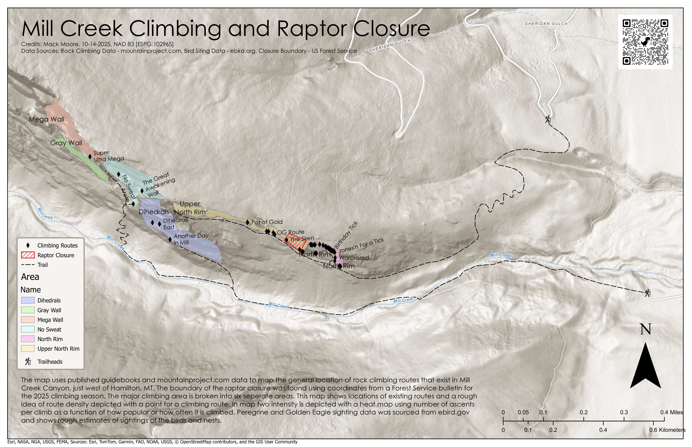
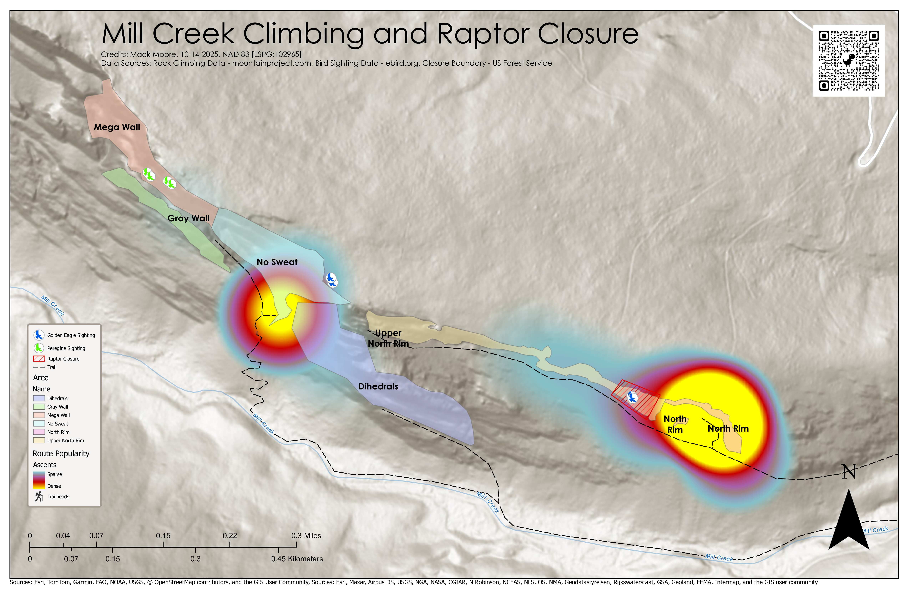

This spatial analysis examines the overlap between established climbing routes and sensitive bird habitat areas. Using GIS overlay techniques, I identified potential conflict zones to support land management and conservation planning.
Tools used: ArcGIS Pro, spatial join, buffer analysis, habitat classification data.